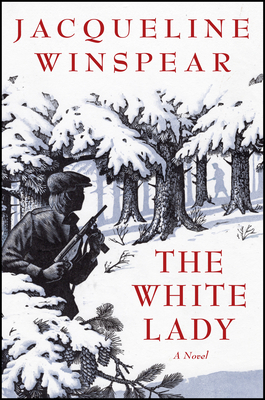

“Winspear is an absolute master of the character-driven thriller . . . [and] the real strength of the novel lies in the poignant and beautifully written backstory of Elinor’s childhood in war-torn Belgium and her personal losses in a devastated London.” —Booklist, Starred Review
“Winspear is an absolute master of the character-driven thriller . . . [and] the real strength of the novel lies in the poignant and beautifully written backstory of Elinor’s childhood in war-torn Belgium and her personal losses in a devastated London.” —Booklist, Starred Review
“Winspear is an absolute master of the character-driven thriller . . . [and] the real strength of the novel lies in the poignant and beautifully written backstory of Elinor’s childhood in war-torn Belgium and her personal losses in a devastated London.” —Booklist, Starred Review
Winner of the 2023 Asian Pacific American Award for Literature
USA Today Best books of August
Christian Science Monitor Ten Best Books of August